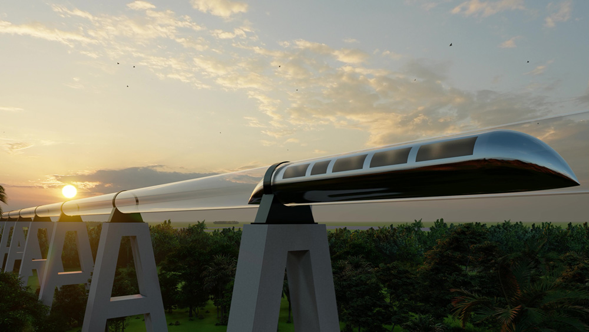

When we change the way we travel, we will travel everywhere: not just to crowded cities, but outside them too.
In a country with many possibilities for faster, reliable transport.
Transport becomes more convenient and accessible. Autonomous transport and fast transport are the words I am looking for. I repeat: autonomous and fast, and of course safe enough.
Major changes are coming this way, along the path to a wider transport network.
Connecting every part of the country you want to visit, quickly, safely and of course autonomously.
When we have transport such as hyperloops and autonomous buses that take us to every part of a country, and to other countries, at a low price, this will affect where people choose to move and build a new home.
Check out: The Last Method of Transport
https://www.fremtidsbloggen.com/post/den-siste-transport-metoden
Rapid development, high-quality structures, movement inside and outside the city: this is where I want to live because it meets my expectations, is accessible and affordable. I can get in and out of the city centre as quickly as someone living there.
Quietly, quickly and safely, I will be there in a moment. The inner-city housing market may ease as development increases farther out, around the core of cities. At the same time, towns outside the cities expand with important building developments alongside accessible transport and its unique advances.
Get around quickly. Come over to my house in town, my friend. I know you live outside the city. No problem: I will be there in five minutes.
It is not only the major transport methods themselves that matter. The system is also essential to development, so that it can operate smoothly and in an organised way: the brain that controls and moves traffic forward.
A system of drones that look after and repair things, a sensor monitoring system that keeps us safe, a system of autonomy: the age of autonomy will arrive.

Be prepared, do not be afraid, contribute, be part of it all, read, study, do what you know best, stay in touch. Engage with reality and see it through.
Across the centuries, the way we travel will change forever. At present people enter and leave cities at the same time as everyone else, going to work or school. We do not need excessive prices everywhere; we need stable, affordable prices suited to the cost of living of an average person, alongside the costs of a smart, autonomous transport system.
What, who and when will bring forward the idea of a utopian system that takes us from one place to the other side of the planet, or straight to work or school from our door — or our bed?